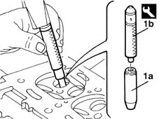
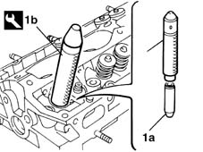

1016E14 single cylinder head valve guides - replace during operation 1016e10
- Path
- Procedures > 10 ENGINE UNIT > 1016 CYLINDER HEAD/S > 1016E cylinder head/s - various operations > 1016E14 single cylinder head valve guides - replace during operation 1016e10
- Kind
- repair procedure (removal / refitting; the operation number is the code)
- Applies to
- engines: 1.6 16v; all production periods
- Interactive page
- https://sloeber94.github.io/elrnDB-fMltpl/en/#/2892340
Applies to: engines: 1.6 16v; all production periods
 Removing
Removing
 Refitting
Refitting1. Using the drift (1a), remove the valve guides (1b).
 | Name | Country |
|---|---|---|
1a | Drift | 1.860.395.000 |

Applies to: engines: 1.6 16v; all production periods
Refitting
RemovingMeasure the valve guide seat, checking that the value is within the recommended figures.
 | Measurement | Value | |
|---|---|---|---|
- | Diameter of valve guide bore in cylinder head (mm) | 12.950 - 12.977 |
If necessary, ream the valve seat.
Check the measurement of the new valve guide.
Make a note of the measurment of the valve seat after reaming.
Valve guides are supplied as spares with the diameters and oversizes listed below.
| Measurement | Value | |
|---|---|---|---|
- | Valve guide external diameter (mm) | Exhaust | 13.030 |
Inlet | 13.010 | ||
| Measurement | Value | |
|---|---|---|---|
- | Oversizes (mm) | 00.5 / 0.10 / 0.25 |
Also bear in mind that the clearance between the valve guide and the seat in the cylinder head should be within the recommended values.
| Measurement | Value | |
|---|---|---|---|
- | Clearance between valve guide - bore in cylinder head (mm) | 0.033 - 0.080 |
Before fitting the new valve guides, the cylinder head has to be heated to a temperature of around 80 - 100 °C.
1. Fit the new valve guide, using a suitable drift.
| Name | Country |
|---|---|---|
1 | Counter-torque | 1.860.846.000 |

Applies to: engines: 1.6 16v; all production periods
Ream the internal diameter of the valve guide, using a suitable reamer.
Check that the value of the valve guide internal diameter after refacing and the clearance with the valve are within the recommended values or else the valve guide has to be replaced.
| Measurement | Value | |
|---|---|---|---|
- | Valve guide internal diameter (mm) | 7.022 ÷ 7.040 |
| Measurement | Value | |
|---|---|---|---|
- | Clearance between inlet valve - inlet valve guide (mm) | 0.022 ÷ 0.058 |
| Measurement | Value | |
|---|---|---|---|
- | Clearance between exhaust valve - exhaust valve guide (mm) | 0.030 ÷ 0.066 |